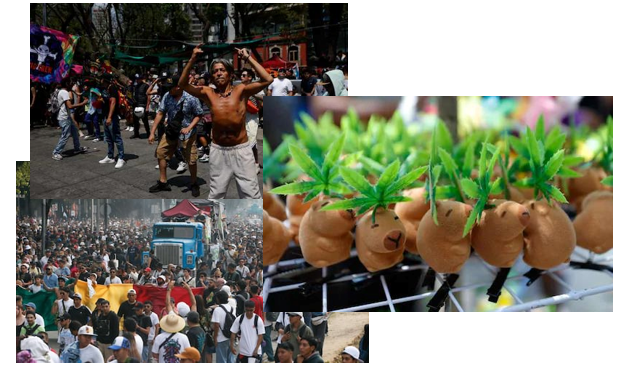

Miles se movilizan en CDMX en la Marcha 4/20 por la legalización del cannabis

Este domingo, miles de personas participaron en la Marcha 4/20 en la Ciudad de México, con motivo del Día Mundial de la Marihuana. La movilización, organizada por diversos colectivos, tuvo como principal objetivo exigir la legalización del cannabis, el derecho al autocultivo y el cese de la criminalización de los consumidores.
Recorrido y actividades
Las actividades comenzaron a las 11:00 horas con una concentración en el Monumento a la Revolución. Más tarde, el colectivo Siembra Cultura partió de la Estela de Luz hacia el Ángel de la Independencia a las 15:00 horas. Finalmente, a las 16:20, el colectivo Hijas de la Cannabis encabezó la movilización principal rumbo al Hemiciclo a Juárez.
En este punto culminante se llevó a cabo el Festival 4:20 Nacional 2025, que incluyó música en vivo, actividades culturales y discursos de activistas entre las 14:30 y las 18:30 horas. Se estimó la participación de más de 600 personas durante la jornada.
Exigen marco legal claro
Los asistentes exigieron a las autoridades federales y locales que se establezca un marco legal que regule de manera clara el uso recreativo del cannabis. También solicitaron respeto a los usos tradicionales y el derecho al cultivo personal. “Queremos cultivar sin miedo y consumir sin ser perseguidos”, expresó uno de los manifestantes.
Autoridades se pronuncian
El gobierno capitalino informó que, si bien se permitió la manifestación, la venta de marihuana y alcohol en la vía pública está prohibida durante estos eventos, como medida preventiva para garantizar la seguridad de los asistentes.
Freno legislativo
Aunque la Suprema Corte de Justicia de la Nación declaró en 2021 inconstitucional la prohibición del uso lúdico del cannabis, la legislación correspondiente permanece estancada en el Senado desde 2022 por falta de consenso entre los partidos.
Conclusión
La Marcha 4/20 concluyó sin incidentes mayores y evidenció el creciente apoyo ciudadano a una política de drogas basada en derechos humanos, salud pública y justicia social.